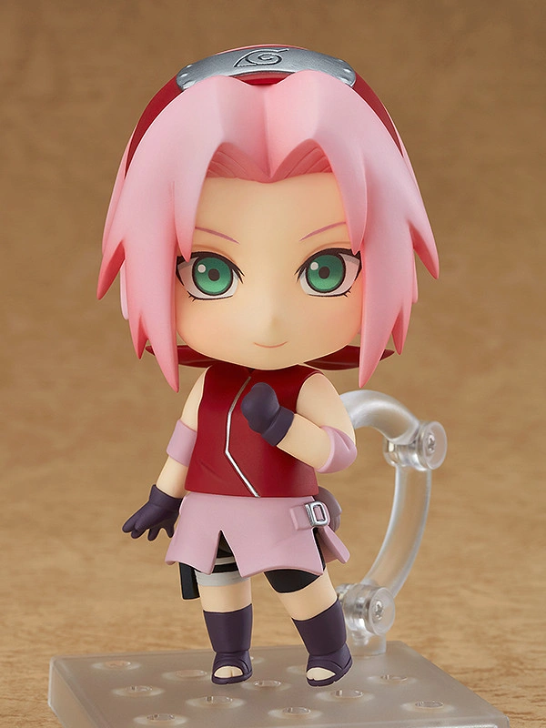
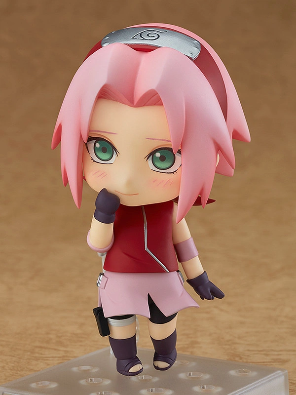
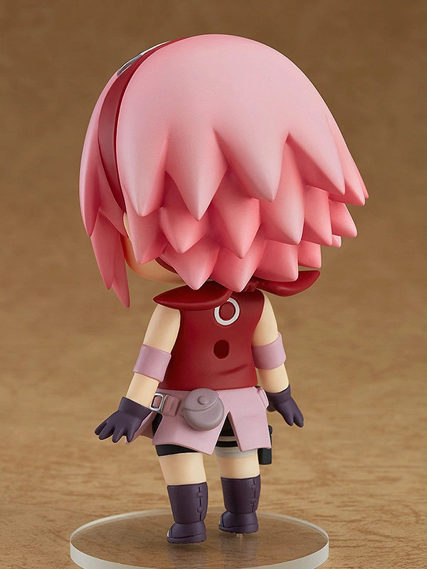

Sakura Uchiha (うちはサクラ, Uchiha Sakura, née Haruno (春野)) is a kunoichi of Konohagakure. When assigned to Team 7,
Sakura quickly finds herself ill-prepared for the duties of a shinobi. However, after training under the Sannin Tsunade, she overcomes this,
and becomes recognised as one of the greatest medical-nin in the world.


From the popular anime series "Naruto Shippuden" comes a Nendoroid of Sakura Haruno!
She comes with three face plates including a smiling expression, an embarrassed expression as well as her classic "Chaaaaa!" expression!
Nendoroid Sakura comes with a selection of alternate arm and leg parts which allow for all sorts of acrobatic poses,
as well as a special background sheet featuring her personal summon, Katsuyu! With Sakura's release all the original members
of Team 7 have joined the Nendoroid series, so be sure to display them all together!.
